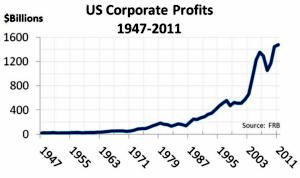
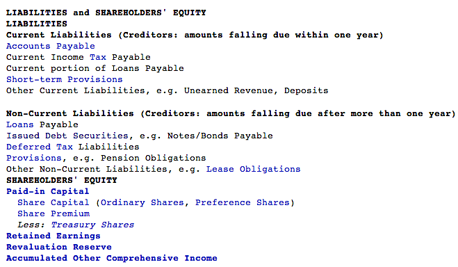
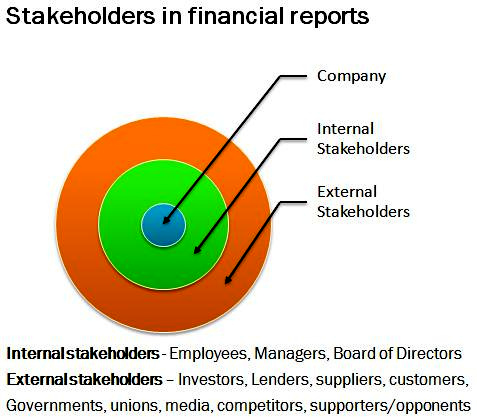

Table of Contents
12. Reporting of Stockholders' Equity
12.1. Understanding the Corporation
12.1.1. Characteristics of a Corporation
12.1.1. Formation of the Corporation
12.2. Stock Transactions
12.2.1. Issuing Stock
12.2.1. Employee Stock Compensation
12.2.1. Repurchasing Stock
12.2.1. Treasury Stock
12.3. Rules and Rights of Common and Preferred Stock
12.3.1. Claim to Income
12.3.1. Voting Right
12.3.1. Provisions of Preferred Stock
12.3.1. Purchasing New Shares
12.3.1. Preferred Stock Rules and Rights
12.3.1. Comparing Common Stock, Preferred Stock, and Debt
12.4. Additional Detail on Preferred Stock
12.4.1. Dividend Preference
12.4.1. Liquidation Preference
12.4.1. Accounting for Preferred Stock
12.5. Dividend Policy
12.5.1. Impact of Dividend Policy on Clientele
12.5.1. Stock Dividends vs. Cash Dividends
12.5.1. Investor Preferences
12.5.1. Accounting Considerations
12.5.1. Signaling
12.6. Cash Dividend Alternatives
12.6.1. Dividend Reinvestments
12.6.1. Stock Dividends
12.6.1. Drawbacks of Repurchasing Shares
12.6.1. Reverse Splits
12.6.1. Benefits of Repurchasing Shares
12.6.1. Stock Splits
12.6.1. Repurchasing Shares
12.7. Reporting and Analyzing Equity
12.7.1. Reporting Stockholders' Equity
12.7.1. Earnings per Share
12.7.1. Dividend Yield Ratio
12.8. Additional Topics in Stockholders' Equity
12.8.1. Other Comprehensive Income
12.8.1. Convertible Stock
12.8.1. Stock Warrants
12.8.1. Calculating Diluted Earnings per Share
12. Reporting of Stockholders' Equity
12.1. Understanding the Corporation
12.1.1. Characteristics of a Corporation
Corporations are separate legal entities with a wide variety of legal, organizational, and operational characteristics.
Learning Objective
Recognize the various facets of organizational requirements and characteristics
Key Points
- Organizations are legally recognized individual entities operating within the legal confines of a given economy.
- Organizations can be privately held or publicly traded, as well as for profit or nonprofit. Organizations have liabilities, profits, taxes, and other legal reporting requirements.
- Ownership of an organization is generally determined via holding a certain percentage of existing corporate shares.
- A board of directors is often elected to oversee the organization's practices and operations and to act as a voice for shareholders.
- The incorporation process has a number of steps that individuals must take in order to legally create a new organization.
Key Term
- insolvency
- When debts exceed existing assets (i.e. the ability to pay them).
Defining the Corporation
A corporation is legally recognized as a person and singular legal entity within the confines of the law, independent of any specific individual who may have started it. Corporations are started and maintained through legal registration and periodic upkeep, and have tax reporting responsibilities within the region in which they are registered.
Organizations can be publicly traded (and thus publicly owned) or privately held, as well as for profit or non profit. In the United States, a corporation is generally considered a larger business organization, though non-profits can still be similarly registered. Generally speaking, corporations interact with the broader economy through operations, profits, and taxes.
{kind=link}
This chart illustrates the overall corporate profit over time in the U.S.

This chart illustrates the effective corporate tax rate in the U.S. over time.
Ownership
Corporations are, in theory, owned and controlled by members and shareholders. To simplify this logic a bit, if a company is owned equally by 5 different people, then each individual owns 20% of the value of the overall organization. As a result, ownership has a significant capital component. Organizations such as credit unions and cooperatives function in a slightly different manner, where each additional member of the project may own equal shares regardless of capital inputs.
While larger, publicly traded organizations may be owned by hundreds of thousands of shareholders, it is common practice for members to elect a board of directors to oversee the actual running of the organization (two boards are elected in some countries: a managerial board and a supervisory board). The respective boards will oversee typical operations of the firm, and ensure that the best interests of the community and the owners are being upheld.
Liabilities
Organizations are held accountable for their actions, just as individuals would be. As a result, organizations can be brought to court on various charges and convicted of criminal offenses. Organizations can also be dissolved for a wide variety of reasons including insolvency, bankruptcy, monopoly, and a wide variety of other failures to operate profitably and/or ethically.
The individuals within an organization, granted it is a limited liability organization, are somewhat insulated from the broader failings of the organization. This means that debts being taken out on behalf of the organization are not the liability of the individuals working there, but instead a liability of the legal entity that is called the corporation.
How to Incorporate
It's worth noting what is traditionally required of an organization to become a corporation. In the United States, each state is different, but the following are common denominators:
- Business purpose (general and, sometimes, specific)
- Corporate name
- Registered agent
- Incorporator
- Share par value
- Number of authorized shares of stock
- Directors
- Preferred shares
- Officers
12.1.2. Formation of the Corporation
Registration is the main prerequisite to a corporation's assumption of limited liability.
Learning Objective
Summarize the purpose of the articles of incorporation
Key Points
- Generally, a corporation files articles of incorporation with the government, laying out the general nature of the corporation, the amount of stock it is authorized to issue, and the names and addresses of directors.
- Nowadays, corporations in most jurisdictions have a distinct name that does not need to make reference to their membership.
- Some jurisdictions do not allow the use of the word "company" alone to denote corporate status, as it may refer to a partnership or some other form of collective ownership.
- In many jurisdictions, corporations whose shareholders benefit from limited liability are required to publish annual financial statements and other data, so that creditors who do business with the corporation are able to assess the creditworthiness of the corporation.
Key Terms
- privately held corporation
- a business entity owned by a small number of people, and not having shares of ownership sold via a stock exchange or other public market
- publicly held corporation
- a business entity owned by shareholders who may buy or sell their shares to anyone through a stock exchange
- corporation
- A group of individuals, created by law or under authority of law, having a continuous existence independent of the existences of its members, and powers and liabilities distinct from those of its members.
- charter
- A document issued by some authority, creating a public or private institution, and defining its purposes and privileges.
- limited liability
- The liability of an owner or a partner of a company for no more capital than they have invested.
Formation
Historically, corporations were created by a charter granted by government . Today, corporations are usually registered with the state, province, or national government, and regulated by the laws enacted by that government.
Registration is the main prerequisite to a corporation's assumption of limited liability. The law sometimes requires the corporation to designate its principal address, as well as a registered agent (a person or company designated to receive legal service of process). It may also be required to designate an agent or other legal representative of the corporation.
Generally, a corporation files articles of incorporation with the government, laying out the general nature of the corporation, the amount of stock it is authorized to issue, and the names and addresses of directors. Once the articles are approved, the corporation's directors meet to create bylaws that govern the internal functions of the corporation, such as meeting procedures and officer positions.
The law of the jurisdiction in which a corporation operates will regulate most of its internal activities, as well as its finances. If a corporation operates outside its home state, it is often required to register with other governments as a foreign corporation, and is almost always subject to the laws of its host state pertaining to employment, crimes, contracts, civil actions, and the like.
Naming
Corporations generally have a distinct name. Historically, some corporations were named after their membership: for instance, "The President and Fellows of Harvard College. " Nowadays, corporations in most jurisdictions have a distinct name that does not need to make reference to their membership. In Canada, this possibility is taken to its logical extreme: many smaller Canadian corporations have no names at all, merely numbers based on a registration number (for example, "12345678 Ontario Limited"), which is assigned by the provincial or territorial government where the corporation incorporates.
In most countries, corporate names include a term or an abbreviation that denotes the corporate status of the entity (for example, "Incorporated" or "Inc." in the United States) or the limited liability of its members (for example, "Limited" or "Ltd."). These terms vary by jurisdiction and language. In some jurisdictions they are mandatory, and in others they are not. Their use puts everybody on constructive notice that they are dealing with an entity whose liability is limited, and does not reach back to the persons who own the entity: one can only collect from whatever assets the entity still controls when one obtains a judgment against it.
Some jurisdictions do not allow the use of the word "company" alone to denote corporate status, as it may refer to a partnership or some other form of collective ownership (in the United States it can be used by a sole proprietorship but this is not generally the case elsewhere).
Financial disclosure
In many jurisdictions, corporations whose shareholders benefit from limited liability are required to publish annual financial statements and other data, so that creditors who do business with the corporation are able to assess the creditworthiness of the corporation and cannot enforce claims against shareholders. Shareholders, therefore, experience some loss of privacy in return for limited liability. This requirement generally applies in Europe, but not in Anglo-American jurisdictions, except for publicly traded corporations where financial disclosure is required for investor protection.
Steps required for incorporation
- The articles of incorporation (also called a charter, certificate of incorporation or letters patent) are filed with the appropriate state office, listing the purpose of the corporation, its principal place of business and the number and type of shares of stock. A registration fee is due, which is usually between \$25 and \$1,000, depending on the state.
- A corporate name is generally made up of three parts: "distinctive element", "descriptive element", and a "legal ending". All corporations must have a distinctive element, and in most filing jurisdictions, a legal ending to their names. Some corporations choose not to have a descriptive element. In the name "Tiger Computers, Inc.", the word "Tiger" is the distinctive element; the word "Computers" is the descriptive element; and the "Inc." is the legal ending. The legal ending indicates that it is, in fact, a legal corporation and not just a business registration or partnership. Incorporated, limited, and corporation, or their respective abbreviations (Inc., Ltd., Corp. ) are the possible legal endings in the U.S.
- Usually, there are also corporate bylaws which must be filed with the state. Bylaws outline a number of important administrative details such as when annual shareholder meetings will be held, who can vote and the manner in which shareholders will be notified if there is need for an additional "special" meeting.
12.2. Stock Transactions
12.2.1. Issuing Stock
The amount of issued stock is based on a company's authorized shares, or the maximum number of shares authorized for issue to shareholders.
Learning Objective
Differentiate between common and preferred stock
Key Points
- Issued shares are the sum of outstanding shares and treasury stock, or stock reacquired by the company. Most public companies issue two major types of shares: common and preferred.
- Common shareholders may possess "voting" shares and have the ability to influence company decisions through their vote. Owning common stock tends to be riskier than owning preferred stock.
- Preferred stock is considered a hybrid financial instrument because the shares have properties of both equity and debt.
- When reporting common or preferred stock in stockholder's equity, the value of shares is divided between the stock's par, or stated, value, and the amount in excess of par is recorded to additional paid in capital.
Key Terms
- creditor
- A person to whom a debt is owed.
- capital
- Money and wealth. The means to acquire goods and services, especially in a non-barter system.
- authorized stock
- shares created by the company
- liquidation
- The selling of the assets of a business as part of the process of dissolving it.
Issuing Company Stock
The process of issuing stock-- or shares-- of a publicly traded company involves several steps. The amount of issued stock is dependent on the authorized capital of a company, or the maximum number of shares authorized by a company's corporate documents to issue to shareholders. A portion of authorized capital tends to remain unissued, but the number can be changed by shareholder approval. When shares are issued, they are transferred to a subscriber, an action referred to as an allotment. After the allotment, a subscriber becomes a shareholder. Issued shares are the sum of outstanding shares and treasury stock, or stock reacquired by the company. Most public companies issue two major types of shares: common and preferred.
Common Stock
Shares of common stock are primarily issued in the United States. Common shareholders may possess "voting" shares and have the ability to influence company decisions through their vote. Owning common stock tends to be riskier than owning preferred stock; yet over time, common shares on average perform better than preferred shares or bonds. The greater amount of risk is due to the fact that shares receive dividends only after preferred shareholders are paid and, in the event of a business liquidation, common stock shareholders are paid last, after creditors and preferred shareholders.
Preferred Stock
Preferred stock is considered a hybrid financial instrument because the shares have properties of both equity and debt. Preferred shares tend to pay dividends to shareholders, which can accumulate from one period to the next, and have priority over common shareholders when dividends are paid or assets liquidated. Similar to bonds, preferred shares are rated by credit-rating companies and are also callable by the company. Some other features associated with preferred stock include convertibility to common stock, non-voting rights, and the potential of shares to be either cumulative or non-cumulative of company dividends.
Stock Issuance and Stockholder's Equity
Both common and preferred stock issued are reported in the stockholder's equity section of the balance sheet. Each share type is reported at market value at the time the shares are purchased by investors, which is also the point in time when shares become outstanding. This value is divided between the stock's par, or stated value and additional paid in capital.
12.2.2. Employee Stock Compensation
An employee stock option (ESO) is a call (buy) option on a firm's common stock, granted to an employee as part of his compensation.
Learning Objective
Explain how employee stock options work and how a company would record their issue
Key Points
- Options, as their name implies, do not have to be exercised. The holder of the option should ideally exercise it when the stock's market price rises higher than the option's exercise price. When this occurs, the option holder profits by acquiring the company stock at a below market price.
- An ESO has features that are unlike exchange-traded options, such as a non-standardized exercise price and quantity of shares, a vesting period for the employee, and the required realization of performance goals.
- An option's fair value at the grant date should be estimated using an option pricing model, such as the Black–Scholes model or a binomial model. A periodic compensation expense is reported on the income statement and also in additional paid in capital account in the stockholder's equity section.
Key Terms
- exercise price
- The fixed price at which the owner of an option can purchase (in the case of a call) or sell (in the case of a put) the underlying security or commodity.
- remuneration
- A payment for work done; wages, salary, emolument.
- vesting period
- A period of time an investor or other person holding a right to something must wait until they are capable of fully exercising their rights and until those rights may not be taken away.
Example
- A company offers stock options due in three years. The stock options have a total value of \$150,000, and is for 50,000 shares of stock at a purchase price of \$10. The stock's par value is \$1. The journal entry to expense the options each period would be: Compensation Expense \$50,000 Additional Paid-In Capital, Stock Options \$50,000. This expense would be repeated for each period during the option plan. When the options are exercised, the firm will receive cash of \$500,000 (50,000 shares at \$10). Paid-In capital will have to be reduced by the amount credited over the three year period. Common stock will increase by \$50,000 (50,000 shares at \$1 par value). And paid-in capital in excess of par must be credited to balance out the transaction. The journal entry would be:Cash \$500,000 Additional Paid-In Capital, Stock Options \$150,000 Common Stock \$50,000 Additional Paid-In Capital, Excess of Par \$600,000
Definition of Employee Stock Options
An employee stock option (ESO) is a call (buy) option on the common stock of a company, granted by the company to an employee as part of the employee's remuneration package. The objective is to give employees an incentive to behave in ways that will boost the company's stock price. ESOs are mostly offered to management as part of their executive compensation package. They may also be offered to non-executive level staff, especially by businesses that are not yet profitable and have few other means of compensation. Options, as their name implies, do not have to be exercised. The holder of the option should ideally exercise it when the stock's market price rises higher than the option's exercise price. When this occurs, the option holder profits by acquiring the company stock at a below market price .
Features of ESOs
ESOs have several different features that distinguish them from exchange-traded call options:
- There is no standardized exercise price and it is usually the current price of the company stock at the time of issue. Sometimes a formula is used, such as the average price for the next 60 days after the grant date. An employee may have stock options that can be exercised at different times of the year and for different exercise prices.
- The quantity of shares offered by ESOs is also non-standardized and can vary.
- A vesting period usually needs to be met before options can be sold or transferred (e.g., 20% of the options vest each year for five years).
- Performance or profit goals may need to be met before an employee exercises her options.
- Expiration date is usually a maximum of 10 years from date of issue.
- ESOs are generally not transferable and must either be exercised or allowed to expire worthless on expiration day. This should encourage the holder to sell her options early if it is profitable to do so, since there's substantial risk that ESOs, almost 50%, reach their expiration date with a worthless value.
- Since ESOs are considered a private contract between an employer and his employee, issues such as corporate credit risk, the arrangement of the clearing, and settlement of the transactions should be addressed. An employee may have limited recourse if the company can't deliver the stock upon the exercise of the option.
- ESOs tend to have tax advantages not available to their exchange-traded counterparts.
Accounting and Valuation of ESOs
Employee stock options have to be expensed under US GAAP in the US. As of 2006, the International Accounting Standards Board (IASB) and the Financial Accounting Standards Board (FASB) agree that an option's fair value at the grant date should be estimated using an option pricing model. The majority of public and private companies apply the Black–Scholes model. However, through September 2006, over 350 companies have publicly disclosed the use of a binomial model in Securities and Exchange Commission (SEC) filings. Three criteria must be met when selecting a valuation model:
- The model is applied in a manner consistent with the fair value measurement objective and other requirements of FAS123R;
- is based on established financial economic theory and generally applied in the field;
- and reflects all substantive characteristics of the instrument (i.e. assumptions on volatility, interest rate, dividend yield, etc.).
A periodic compensation expense is recorded for the value of the option divided by the employee's vesting period. The compensation expense is debited and reported on the income statement. It is also credited to an additional paid-in capital account in the equity section of the balance sheet.
12.2.3. Repurchasing Stock
A stock repurchase is the reacquisition by a company of its own stock for the purpose of retirement or re-issuance.
Learning Objective
Explain why a company would repurchase their stock and how they would record it on their financial statements
Key Points
- Shares kept for the purpose of re-issuance are referred to as treasury stock.
- Buying back shares reduces the number of shares a company has outstanding without altering earnings. This can improve a company's price/earnings ratio and earnings per share.
- In an inefficient market that has underpriced a company's stock, a repurchase of shares can benefit current shareholders by providing support to the stock price. If the stock is overpriced, the opposite is true.
- On the balance sheet, treasury stock is listed under shareholders' equity as a negative number. The accounts may be called "Treasury stock" or "equity reduction".
Key Terms
- Earnings Per Share
- The amount of earnings per each outstanding share of a company's stock.
- price earnings ratio
- The market price of that share divided by the annual earnings per share.
- treasury stock
- A treasury or "reacquired" stock is one which is bought back by the issuing company, reducing the amount of outstanding stock on the open market ("open market" including insiders' holdings).
Reasons to Repurchase Stock
The reasons to repurchase stock can vary from company to company. Reasons can include: (1) to cancel and retire the stock; (2) to reissue the stock later at a higher price; (3) to reduce the number of shares outstanding and increase earnings per share (EPS); or (4) to issue the stock to employees. The company either retires the repurchased shares or keeps them as treasury stock, available for re-issuance. If the intent of stock reacquisition is cancellation and retirement, the treasury shares exist only until they are retired and cancelled by a formal reduction of corporate capital. For accounting purposes, treasury shares are included in calculations to determine legal capital, but are excluded from calculations for EPS amounts.
Benefits to Repurchasing Stock
Stock repurchases are often used as a tax-efficient method to put cash into shareholders' hands, rather than paying dividends. Sometimes, companies do this when they feel that their stock is undervalued on the open market. Another motive for stock repurchase is to protect the company against a takeover threat.
In an efficient market, the net effect of a stock repurchase does not change the value of each share. For example, if the market fairly prices a company's shares at \$50 a share, and the company buys back 100 shares for \$5,000, it now has \$5,000 less cash but there are also 100 fewer shares outstanding. So, the net effect of the repurchase would be zero. Buying back shares can improve a company's price earnings ratio due to the reduced number of shares (and unchanged earnings). It can improve EPS due to the fewer number of shares outstanding as well as unchanged earnings. In an inefficient market that has underpriced a company's stock, a repurchase of shares can benefit current shareholders by providing support to the stock price. If the stock is overpriced, the opposite is true.
Accounting for Repurchased Shares
On the balance sheet, treasury stock is listed under shareholders' equity as a negative number. The accounts may be called "Treasury stock" or "equity reduction".
One way of accounting for treasury stock is with the cost method. In this method, the paid-in capital account is reduced in the balance sheet when the treasury stock is bought. When the treasury stock is sold back on the open market, the paid-in capital is either debited or credited if it is sold for more or less than the initial cost respectively.
Another common way for accounting for treasury stock is the par value method. In the par value method, when the stock is purchased back from the market, the books will reflect the action as a retirement of the shares. Therefore, common stock is debited and treasury stock is credited. However, when the treasury stock is resold back to the market, the entry in the books will be the same as the cost method.
In either method, any transaction involving treasury stock cannot increase the amount of retained earnings. If the treasury stock is sold for more than cost, then the paid-in capital treasury stock is the account that is increased, not retained earnings. In auditing financial statements, it is a common practice to check for this error to detect possible attempts to "cook the books. "
Example
Consider a company that repurchases 15,000 shares of its \$1 par value stock for \$25 per share. In this transaction:
- Treasury stock is debited \$375,000
- Cash is credited \$375,000
The firm then resells 7,500 shares of treasury stock for \$28. In this transaction:
- Cash is debited \$210,000
- Treasure Stock is credited \$187,500
- Additional Paid-In Capital is credited \$22,500
If the remaining 7,500 shares of stock are resold for less than the original \$25 purchase price, and if the adjustment to treasury stock minus the proceeds from the sale is more than the balance of additional paid-in capital, an adjustment to retained earnings must be made. Consider the shares are sold for \$21. The accounting for the transaction would be:
- Cash is debited \$157,500
- Additional Paid-In Capital is debited \$22,500
- Retained Earnings debited \$7,500
- Treasury Stock is credited \$187,500
12.2.4. Treasury Stock
Treasury stock is a company's issued and reacquired capital stock; the stock has not been retired and is legally available for reissuance.
Learning Objective
Distinguish between the cost method and the par value method of recording treasury stock
Key Points
- Treasury stock can be accounted for using the cost or par value methods.
- Using the cost method, a treasury stock account is debited in the equity section of the balance sheet for the stock purchase price and cash is credited.
- When using the par value method, the company's reacquisition of its own stock is treated as a retirement of the shares reacquired; treasury stock is debited for the par value of the stock and paid-in capital is debited or credited by the difference between the par value and repurchase price.
Key Terms
- paid-in capital
- refers to capital contributed to a corporation by investors through purchase of stock from the corporation (primary market) (not through purchase of stock in the open market from other stockholders (secondary market)
- preemptive right
- The right of shareholders to maintain a constant percentage of a company's shares by receiving a proportionate fraction of any new shares issued, thus preempting any dilution
Treasury Stock
Definition of Treasury Stock
Treasury stock is the corporation's own capital stock it has issued and then reacquired. Because this stock has not been canceled, it is legally available for reissuance and cannot be classified as unissued stock. When a corporation has additional authorized shares of stock that are to be issued after the date of original issue, in most states the preemptive right requires offering these additional shares first to existing stockholders on a pro rata basis. However, firms may reissue treasury stock without violating the preemptive right provisions of state laws; that is, treasury stock does not have to be offered to current stockholders on a pro rata basis. Treasury stock can be accounted for using the cost or par value methods. Companies that issue common stock and reacquire it in the future, reclassify it as treasury stock.
Cost Method
Using the cost method, a treasury stock account is increased (debited) in the equity section of the balance sheet for the stock purchase price and cash is reduced (credited). The treasury stock amount is subtracted from the other stockholders' equity amount, therefore it is considered a contra account. When the treasury stock is sold back on the open market, the treasury stock account is reduced (credited) for the original cost and the difference between original cost and sales price is debited or credited to a treasury stock paid in capital account, which is also disclosed in the equity section of the balance sheet. Cash is debited for the proceeds of the sale.
Par Value Method
When using the par value method, the company's reacquisition of its own stock is treated as a retirement of the shares reacquired. On the purchase date, treasury stock is increased (debited) for the par value of stock reacquired and paid in capital is reduced (debited) or increased (credited) by the amount of the purchase price in excess of par. Cash is also credited for the purchase price. When the stock is resold, treasury stock is credited for the par value of the stock sold. Differences between the sales price and repurchase price are debited or credited to paid in capital, along with a debit to cash for proceeds from the sale.
12.3. Rules and Rights of Common and Preferred Stock
12.3.1. Claim to Income
In the cases of bankruptcy and dividend distribution, preferred stock shareholders will receive assets before common stock shareholders.
Learning Objective
Describe the rights preferred stock has to a company's income
Key Points
- Common stock and preferred stock are both forms of equity ownership but carry different rights and claims to income.
- Preferred stock shareholders will have claim to assets over common stock shareholders in the case of company liquidation.
- Preferred stock also has first right to dividends.
Key Terms
- Common stock
- Common stock is a form of equity and type of security. Common stock shareholders are at the bottom of the line when it comes to dividends and receiving compensation in the case of bankruptcy.
- Preferred Stock
- Preferred stock is an equity security that has the properties of both an equity and debt instrument and is higher ranking than common stock.
Preferred and common stock have varying claims to income which will change from one equity issuer to another. In general, preferred stock will be given some preference in assets to common assets in the case of company liquidation, but both will fall behind bondholders when asset distribution takes place. In the event of bankruptcy, common stock investors receive any remaining funds after bondholders, creditors (including employees), and preferred stock holders are paid. As such, these investors often receive nothing after a bankruptcy. Preferred stock also has the first right to receive dividends. In general, common stock shareholders will not receive dividends until it is paid out to preferred shareholders. Access to dividends and other rights vary from firm to firm. Preferred and common stock both carry rights of ownership, but represent different classes of equity ownership.
Preferred stock may or may not have a fixed liquidation value (or par value) associated with it. This represents the amount of capital that was contributed to the corporation when the shares were first issued. Preferred stock has a claim on liquidation proceeds of a stock corporation equal to its par (or liquidation) value, unless otherwise negotiated. This claim is senior to that of common stock, which has only a residual claim.
Both types of stock can have a claim to income in the form of capital appreciation as well. As company value increases based on market determinants, the value of equity held in this company also will increase. This translates to a return on investment to shareholders. This will be different to common stock shareholders and preferred stock shareholders because of the different prices and rewards based on holding these different kinds of shares. In turn, should market forces decrease, the value of equity held will decrease as well, reflecting a loss on investment and, therefore, a decrease on the value of any claims to income for shareholders.
12.3.2. Voting Right
Common stock generally carries voting rights, while preferred stock does not; however, this will vary from company to company.
Learning Objective
Summarize the voting rights associated with common and preferred stock
Key Points
- Common stock shareholders can generally vote on issues, such as members of the board of directors, stock splits, and the establishment of corporate objectives and policy.
- While having superior rights to dividends and assets over common stock, generally preferred stock does not carry voting rights.
- Many of the voting rights of a shareholder can be exercised at annual general body meetings of companies. An annual general meeting is a meeting that official bodies, and associations involving the general public, are often required by law to hold.
Key Terms
- Voting rights
- Rights which are generally associated with common stock shareholders in regards to business entity matters ( such as electing the board of directors or establishing corporate policy)
- Preferred Stock
- Preferred stock is an equity security that has the properties of both an equity and debt instrument and is higher ranking than common stock.
- Common stock
- Common stock is a form of equity and type of security. Common stock shareholders are at the bottom of the line when it comes to dividends and receiving compensation in the case of bankruptcy.
Voting Rights
Common stock can also be referred to as a "voting share. " Common stock usually carries with it the right to vote on business entity matters, such as electing the board of directors, establishing corporate objectives and policy, and stock splits. However, common stock can be broken into voting and non-voting classes. While having superior rights to dividends and assets over common stock, generally preferred stock does not carry voting rights.
The matters that a stockholder gets to vote on vary from company to company. In many cases, the shareholder will be able to vote for members of a company board of directors and, in general, each share gets a vote as opposed to each shareholder. Therefore, a single investor who owns 300 shares will have more say in a voting matter than a single shareholder that owns 30.
Exercising Voting Rights
Many of the voting rights of a shareholder can be exercised at annual general body meetings of companies. An annual general meeting is a meeting that official bodies and associations involving the general public (including companies with shareholders) are often required by law (or the constitution, charter, by-laws, etc., governing the body) to hold. An AGM is held every year to elect the board of directors and inform their members of previous and future activities. It is an opportunity for the shareholders and partners to receive copies of the company's accounts, as well as reviewing fiscal information for the past year and asking any questions regarding the directions the business will take in the future. Shareholders also have the option to mail their votes in if they cannot attend the shareholder meetings. In 2007, the Securities and Exchange Commission voted to require all public companies to make their annual meeting materials available online. Shareholders with the right to vote will have numerous options in how to make their voice heard with regards to voting matters should they choose to.
12.3.3. Provisions of Preferred Stock
Preferred shares have numerous rights which can be attached to them, such as cumulative dividends, convertibility, and participation.
Learning Objective
Describe in detail the different types of provisions for preferred stock
Key Points
- If a preferred share has cumulative dividends, then it contains the provision that should a company fail to pay out dividends at any time at the stated rate, then the issuer will have to make up for it as time goes on.
- Convertible preferred stock can be exchanged for a predetermined number of company common stock shares.
- Often times companies will keep the right to call or buy back preferred shares at a predetermined price.
- Participating preferred issues offer holders the opportunity to receive extra dividends if the company achieves predetermined financial goals.
- Sometimes, dividends on preferred shares may be negotiated as floating; they may change according to a benchmark interest-rate index.
Key Terms
- Callable shares
- Shares which can be bought back by the issuer at a predetermined price.
- Convertible preferred stock
- Convertible preferred stock can be exchanged for a predetermined number of company common stock shares.
- Cumulative Dividends
- Condition where owners of certain shares will receive accumulated dividends in the case a company cannot pay out dividends at the stated rate at the stated time.
Preferred stock may be entitled to numerous rights, depending on what is designated by the issuer. One of these rights may be the right to cumulative dividends. Preferred stock shareholders already have rights to dividends before common stock shareholders, but cumulative preferred shares contain the provision that should a company fail to pay out dividends at any time at the stated rate, then the issuer will have to make up for it as time goes on. Dividends are one of the privileges of stock ownership, and preferred shares get more rights to them than common shares do.
Convertible preferred stock can be exchanged for a predetermined number of company common stock shares. Generally, this can occur at the discretion of the investor, and he or she may pick any time to do so and, therefore, take advantage of fluctuations in the price of common stock. Once converted, the common stock cannot be converted back to preferred status.
Often times companies will keep the right to call or buy back preferred shares at a predetermined price. These shares are callable shares.
There is a class of preferred shares known as "participating preferred stock. " These preferred issues offer holders the opportunity to receive extra dividends if the company achieves predetermined financial goals. Investors who purchased these stocks receive their regular dividend regardless of company performance (assuming the company does well enough to make its annual dividend payments). If the company achieves predetermined sales, earnings, or profitability goals, the investors receive an additional dividend.
Almost all preferred shares have a negotiated, fixed-dividend amount. The dividend is usually specified as a percentage of the par value, or as a fixed amount. Sometimes, dividends on preferred shares may be negotiated as floating; they may change according to a benchmark interest-rate index or floating rate. An example of this would be tying the dividend rate to LIBOR.
12.3.4. Purchasing New Shares
New shares can be purchased on exchanges and current shareholders will usually have preemptive rights to newly issued shares.
Learning Objective
Discuss the process and implication of purchasing new shares by a shareholder that already holds shares in a company
Key Points
- New share purchase is an important indicator of current shareholder belief in the health of the company and long term prospects for growth.
- Current Shareholders will often have preemptive rights that give them the right to purchase newly issued company shares before they go on sale to the general public.
- New shares can be purchased on exchanges, which offer a platform for the financial marketplace.
Key Terms
- Stock Exchange
- A form of exchange that provides services for stock brokers and traders to trade stocks, bonds and other securities.
- Preemption
- The right of a shareholder to purchase newly issued shares of a business entity before they are available to the general public so as to protect individual ownership from dilution.
New share purchases are an important action by share shareholders, since it requires a further investment in a business entity and is a reflection of a shareholder's decision to maintain an ownership position in a company, or a potential investor's belief that purchasing equity in a company will be an investment that grows in value.
Current shareholders may have preemptive rights over new shares offered by the company. In practice, the most common form of preemption right is the right of existing shareholders to acquire new shares issued by a company in a rights issue, a usually but not always public offering. In this context, the pre-emptive right is also called "subscription right" or "subscription privilege. " This is the right, but not the obligation, of existing shareholders to buy the new shares before they are offered to the public. In this way, existing shareholders can maintain their proportional ownership of the company, preventing stock dilution.
New shares may be purchased over the same exchange mechanisms that previous stock was acquired. A stock exchange is a form of exchange which provides services for stock brokers and traders to trade stocks, bonds, and other securities. Stock exchanges also provide facilities for issue and redemption of securities and other financial instruments, and capital events, including the payment of income and dividends. The initial offering of stocks and bonds to investors is by definition done in the primary market and subsequent trading is done in the secondary market. A stock exchange is often the most important component of a stock market. Supply and demand in stock markets are driven by various factors that, as in all free markets, affect the price of stocks. New shares can be traded on exchanges such as the Nasdaq, but will usually be offered to current shareholders before being put on sale to the general public.
12.3.5. Preferred Stock Rules and Rights
Preferred stock can include rights such as preemption, convertibility, callability, and dividend and liquidation preference.
Learning Objective
List the rights that preferred stock generally has
Key Points
- Preferred stock generally does not carry voting rights, but this may vary from company to company.
- Preferred stock can gain cumulative dividends, convertibility to common stock, and callability.
- The rights that come with ownership of preferred stock are detailed in a "Certificate of Designation".
Key Terms
- liquidation
- liquidation is the process by which a company (or part of a company) is brought to an end, and the assets and property of the company redistributed
- Preferred Stock
- Preferred stock is an equity security that has the properties of both an equity and debt instrument and is higher ranking than common stock.
Preferred stock usually carries no voting rights, but may carry a dividend and may have priority over common stock in the payment of dividends and upon liquidation. Terms of the preferred stock are stated in a "Certificate of Designation. Preferred stock is a security ( a little more modern that this stock from the VOC or Dutch East India Company) that carries certain rights which designate it from common stock or debt.
Preferred stock is a special class of shares that may have any combination of features not possessed by common stock. The following features are usually associated with preferred stock: Preference in dividends preference in assets, in the event of liquidation, convertibility to common stock, callability, and at the option of the corporation. Some preferred shares have special voting rights to approve extraordinary events (such as the issuance of new shares or approval of the acquisition of a company) or to elect directors, but, once again, most preferred shares have no voting rights associated with them. Some preferred shares gain voting rights when the preferred dividends are in arrears for a substantial time.
Preferred stock may or may not have a fixed liquidation value (or par value) associated with it. This represents the amount of capital which was contributed to the corporation when the shares were first issued. Preferred stock has a claim on liquidation proceeds of a stock corporation equal to its par (or liquidation) value, unless otherwise negotiated. This claim is senior to that of common stock, which has only a residual claim.Almost all preferred shares have a negotiated, fixed-dividend amount. The dividend is usually specified as a percentage of the par value, or as a fixed amount. Sometimes, dividends on preferred shares may be negotiated as floating; they may change according to a benchmark interest-rate index. Preferred stock may also have rights to cumulative dividends.
12.3.6. Comparing Common Stock, Preferred Stock, and Debt
Common stock, preferred stock, and debt are all securities that a company may offer; each of these securities carries different rights.
Learning Objective
Differentiate between the rights of common shareholders, preferred shareholders, and bond holders
Key Points
- Common stock and preferred stock fall behind debt holders as creditors that would receive assets in the case of company liquidation.
- Common stock and preferred stock are both types of equity ownership. They receive rights of ownership in the company, such as voting and dividends.
- Debt holders often receive a bond for lending and while this does not give the ownership rights of being a stockholder, it does create a superior claim to a company's assets in the case of liquidation.
Key Terms
- Common stock
- Common stock is a form of corporate equity ownership, a type of security.
- bond
- A bond is an instrument of indebtness of the bond issuers toward the bond holders.
- Preferred Stock
- Preferred stock is an equity security that has the properties of both an equity and debt instrument and is higher ranking than common stock.
Equity
Common Stock and Preferred Stock are both methods of purchasing equity in a business entity.
Common stock generally carries voting rights along with it, while preferred shares generally do not.
Preferred shares act like a hybrid security, in between common stock and holding debt. Preferred stock can (depending on the issue) be converted to common stock and have access to accumulated dividends and multiple other rights. Preferred stock also has access to dividends and assets in the case of liquidation before common stock does.
However, both common and preferred stock fall behind debt holders when it comes to claims to assets of a business entity should bankruptcy occur. Common shareholders often do not receive any assets after bankruptcy as a result of this principle. However, common stock shareholders can theoretically use their votes to affect company decision making and direction in a way they believe will help the company avoid liquidation in the first place.
Debt
Debt can be "purchased" from a company in the form of a bond. A bond is a financial security that represents a promise by a company or government to repay a certain amount, with interest, to the bondholder.
In finance, a bond is an instrument of indebtedness of the bond issuer to the holders. It is a debt security, under which the issuer owes the holders a debt and, depending on the terms of the bond, is obliged to pay them interest and/or to repay the principal at a later date, termed the maturity. Therefore, a bond is a form of loan or IOU: the holder of the bond is the lender (creditor), the issuer of the bond is the borrower (debtor), and the coupon is the interest. Bonds provide the borrower with external funds to finance long-term investments, or, in the case of government bonds, to finance current expenditure.
Bonds and stocks are both securities, but the major difference between the two is that (capital) stockholders have an equity stake in the company (i.e., they are owners), whereas, bondholders have a creditor stake in the company (i.e., they are lenders). Another difference is that bonds usually have a defined term, or maturity, after which the bond is redeemed, whereas stocks may be outstanding indefinitely.
12.4. Additional Detail on Preferred Stock
12.4.1. Dividend Preference
A corporation may issue two basic classes or types of capital stock, common and preferred, both of which can receive dividends.
Learning Objective
Explain the difference between common stock and preferred stock dividends
Key Points
- A corporation may issue two basic classes or types of capital stock, common and preferred. If a corporation issues only one class of stock, this stock is common stock. All of the stockholders enjoy equal rights.
- Common stock is a form of corporate equity ownership. Common stock holders cannot be paid dividends until all preferred stock dividends are paid in full. On the other hand, common shares on average perform better than preferred shares or bonds over time.
- Preferred stock is an equity security with properties of both an equity and a debt instrument, and is generally considered a hybrid instrument. Preferreds are senior (higher ranking) to common stock, but subordinate to bonds in terms of claim.
Key Terms
- dividend in arrears
- an omitted dividend on cumulative preferred stock
- Preferred Stock
- Stock with a dividend, usually fixed, that is paid out of profits before any dividend can be paid on common stock, and that has priority to common stock in liquidation.
- dividend
- A pro rata payment of money by a company to its shareholders, usually made periodically (eg, quarterly or annually).
- Common stock
- Shares of an ownership interest in the equity of a corporation or other entity with limited liability entitled to dividends, with financial rights junior to preferred stock and liabilities.
Dividends
A corporation may issue two basic classes or types of capital stock—common and preferred. If a corporation issues only one class of stock, this stock is common stock. All of the stockholders enjoy equal rights. Common stock is usually the residual equity in the corporation, meaning that all other claims against the corporation rank ahead of the claims of the common stockholder. Preferred stock is a class of capital stock that carries certain features or rights not carried by common stock. Within the basic class of preferred stock, a company may have several specific classes of preferred stock, each with different dividend rates or other features.
Companies issue preferred stock in order to avoid the following:
- Using bonds with fixed interest charges that must be paid regardless of the amount of net income.
- Issuing so many additional shares of common stock that earnings per share are less in the current year than in prior years.
- Diluting the common stockholders' control of the corporation, since preferred stockholders usually have no voting rights.
Unlike common stock, which has no set maximum or minimum dividend, the dividend return on preferred stock is usually stated at an amount per share or as a percentage of par value. Therefore, the firm fixes the dividend per share. Ownership of shares is documented by the issuance of a stock certificate and represents the shareholder's rights with regards to the business entity.
Details on Common Stock
Common stock is a form of corporate equity ownership, a type of security. The terms "voting share" or "ordinary share" are also used in other parts of the world; common stock is primarily used in the United States. It is called "common" to distinguish it from preferred stock. If both types of stock exist, common stock holders cannot be paid dividends until all preferred stock dividends (including payments in arrears) are paid in full. In the event of bankruptcy, common stock investors receive any remaining funds after bondholders, creditors (including employees), and preferred stock holders are paid. As such, such investors often receive nothing after a bankruptcy. On the other hand, common shares on average perform better than preferred shares over time.
Common stock usually carries with it the right to vote on certain matters, such as electing the board of directors. However, a company can have both a "voting" and "non-voting" class of common stock. Holders of common stock are able to influence the corporation through votes on establishing corporate objectives and policy, stock splits, and electing the company's board of directors. Some holders of common stock also receive preemptive rights, which enable them to retain their proportional ownership in a company should it issue another stock offering. There is no fixed dividend paid out to common stock holders and so their returns are uncertain, contingent on earnings, company reinvestment, and efficiency of the market to value and sell stock. Additional benefits from common stock include earning dividends and capital appreciation.
Details on Preferred Stocks
Preferred stock (also called preferred shares, preference shares or simply preferreds) is an equity security with properties of both an equity and a debt instrument, and is generally considered a hybrid instrument. Preferreds are senior (higher ranking) to common stock, but subordinate to bonds in terms of claim (or rights to stock holders' share of company assets). Preferred stock usually carries no voting rights, but may carry a dividend and may have priority over common stock upon liquidation, and in the payment of dividends. Terms of the preferred stock are stated in a "Certificate of Designation. "
Similar to bonds, preferred stocks are rated by the major credit-rating companies. The rating for preferreds is generally lower, since preferred dividends do not carry the same guarantees as interest payments from bonds, and because they are junior to all creditors.
12.4.2. Liquidation Preference
The main purpose of a liquidation where the company is insolvent is to satisfy claims in the manner and order prescribed by law.
Learning Objective
Summarize how the liquidation preference determines which claims will be paid if a company becomes insolvent
Key Points
- The main purpose of a liquidation where the company is insolvent is to collect in the company's assets, determine the outstanding claims against the company, and satisfy those claims in the manner and order prescribed by law.
- Before the claims are met, secured creditors are entitled to enforce their claims against the assets of the company to the extent that they are subject to a valid security interest. In most legal systems, only fixed security takes precedence over all claims.
- Claimants with non-monetary claims against the company may be able to enforce their rights against the company. For example, a party who had a valid contract for the purchase of land against the company may be able to obtain an order for specific performance.
- Most preferred stocks are preferred as to assets in the event of liquidation of the corporation.
Key Terms
- creditor
- A person to whom a debt is owed.
- Preferred Stock
- Stock with a dividend, usually fixed, that is paid out of profits before any dividend can be paid on common stock, and that has priority to common stock in liquidation.
- liquidation
- The selling of the assets of a business as part of the process of dissolving it.
Example
- A party who had a valid contract for the purchase of land against the company may be able to obtain an order for specific performance and compel the liquidator to transfer title to the land to them, upon tender of the purchase price. After the removal of all assets which are subject to retention of title arrangements, fixed security, or are otherwise subject to proprietary claims of others, the liquidator will pay the claims against the company's assets.
Liquidation Preference
The main purpose of a liquidation where the company is insolvent is to collect in the company's assets, determine the outstanding claims against the company, and satisfy those claims in the manner and order prescribed by law. The liquidator must determine the company's title to property in its possession. Property which is in the possession of the company, but which was supplied under a valid retention of title clause will generally have to be returned to the supplier. Property which is held by the company on trust for third parties will not form part of the company's assets available to pay creditors.
Before the claims are met, secured creditors are entitled to enforce their claims against the assets of the company to the extent that they are subject to a valid security interest. In most legal systems, only fixed security takes precedence over all claims. Security by way of floating charge may be postponed to the preferential creditors.
Claimants with non-monetary claims against the company may be able to enforce their rights against the company. For example, a party who had a valid contract for the purchase of land against the company may be able to obtain an order for specific performance and compel the liquidator to transfer title to the land to them, upon tender of the purchase price. After the removal of all assets which are subject to retention of title arrangements, fixed security, or are otherwise subject to proprietary claims of others, the liquidator will pay the claims against the company's assets.
Priority of Claims
Generally, the priority of claims on the company's assets will be determined in the following order:
- Liquidators costs
- Creditors with fixed charge over assets
- Costs incurred by an administrator
- Amounts owed to employees for wages/superannuation (director limit \$2,000)
- Payments owed in respect of workers' injuries
- Amounts owed to employees for leave (director limit \$1,500)
- Retrenchment payments owing to employees
- Creditors with floating charge over assets
- Creditors without security over assets
- Shareholders (Liquidating distribution) - Most preferred stocks are preferred as to assets in the event of liquidation of the corporation. Stock preferred as to assets is preferred stock that receives special treatment in liquidation. Preferred stockholders receive the par value (or a larger stipulated liquidation value) per share before any assets are distributed to common stockholders. A corporation's cumulative preferred dividends in arrears at liquidation are payable even if there are not enough accumulated earnings to cover the dividends. Also, the cumulative dividend for the current year is payable. Stock may be preferred as to assets, dividends, or both.
- Unclaimed assets will usually vest in the state as bona vacantia.
12.4.3. Accounting for Preferred Stock
All preferred stock is reported on the balance sheet in the stockholders' equity section and it appears first before any other stock.
Learning Objective
Differentiate between preferred to dividends, noncumulative, cumulative and convertible preferred stock
Key Points
- Stock preferred as to dividends means that the preferred stockholders receive a specified dividend per share before common stockholders receive any dividends. A dividend on preferred stock is the amount paid to preferred stockholders as a return for the use of their money.
- Noncumulative preferred stock is preferred stock on which the right to receive a dividend expires whenever the dividend is not declared. When noncumulative preferred stock is outstanding, a dividend omitted or not paid in any one year need not be paid in any future year.
- Cumulative preferred stock is preferred stock for which the right to receive a basic dividend, usually each quarter, accumulates if the dividend is not paid. Companies must pay unpaid cumulative preferred dividends before paying any dividends on the common stock.
- All preferred stock is reported on the balance sheet in the stockholders' equity section and it appears first before any other stock. The par value, authorized shares, issued shares, and outstanding shares is disclosed for each type of stock.
Key Terms
- Common stock
- Shares of an ownership interest in the equity of a corporation or other entity with limited liability entitled to dividends, with financial rights junior to preferred stock and liabilities.
- dividend
- A pro rata payment of money by a company to its shareholders, usually made periodically (eg, quarterly or annually).
- Preferred Stock
- Stock with a dividend, usually fixed, that is paid out of profits before any dividend can be paid on common stock, and that has priority to common stock in liquidation.
- cumulative dividend
- a payments by the company to shareholders that accumulate if a previous payment was missed
Preferred Stock
Preferred stock is a class of capital stock that carries certain features or rights not carried by common stock. Within the basic class of preferred stock, a company may have several specific classes of preferred stock, each with different dividend rates or other features. Companies issue preferred stock to avoid: Ownership of shares is documented by the issuance of a stock certificate and represents the shareholder's rights with regards to the business entity.
- using bonds with fixed interest charges that must be paid regardless of the amount of net income;
- issuing so many additional shares of common stock that earnings per share are less in the current year than in prior years; and
- diluting the common stockholders' control of the corporation, since preferred stockholders usually have no voting rights.
Unlike common stock, which has no set maximum or minimum dividend, the dividend return on preferred stock is usually stated at an amount per share or as a percentage of par value. Therefore, the firm fixes the dividend per share.
Types of Preferred Stock
When a corporation issues both preferred and common stock, the preferred stock may be:
- Preferred as to dividends. It may be noncumulative or cumulative.
- Preferred as to assets in the event of liquidation.
- Convertible or nonconvertible.
- Callable.
Preferred as to Dividends
Stock preferred as to dividends means that the preferred stockholders receive a specified dividend per share before common stockholders receive any dividends. A dividend is the amount paid to preferred stockholders as a return for the use of their money.
For no-par preferred stock, the dividend is a specific dollar amount per share per year, such as USD 4.40. For par value preferred stock, the dividend is usually stated as a percentage of the par value, such as 8% of par value; occasionally, it is a specific dollar amount per share. Most preferred stock has a par value.
Usually, stockholders receive dividends on preferred stock quarterly. Such dividends—in full or in part—must be declared by the board of directors before paid. In some states, corporations can declare preferred stock dividends only if they have retained earnings (income that has been retained in the business) at least equal to the dividend declared.
Noncumulative Preferred Stock
Noncumulative preferred stock is preferred stock in which a dividend expires whenever the dividend is not declared. When noncumulative preferred stock is outstanding, a dividend omitted or not paid in any one year need not be paid in any future year. Because omitted dividends are lost forever, noncumulative preferred stocks are not attractive to investors and are rarely issued.
Cumulative Preferred Stock
Cumulative preferred stock is preferred stock for which the right to receive a basic dividend, usually each quarter, accumulates if the dividend is not paid. Companies must pay unpaid cumulative preferred dividends before paying any dividends on the common stock. For example, assume a company has cumulative, USD 10 par value, 10% preferred stock outstanding of USD 100,000, common stock outstanding of USD 100,000, and retained earnings of USD 30,000. It has paid no dividends for two years. The company would pay the preferred stockholders dividends of USD 20,000 (USD 10,000 per year times two years) before paying any dividends to the common stockholders.
Dividends in arrears are cumulative unpaid dividends, including the quarterly dividends not declared for the current year. Dividends in arrears never appear as a liability of the corporation because they are not a legal liability until declared by the board of directors. However, since the amount of dividends in arrears may influence the decisions of users of a corporation's financial statements, firms disclose such dividends in a footnote.
Most preferred stocks are preferred as to assets in the event of liquidation of the corporation. Stock preferred as to assets is preferred stock that receives special treatment in liquidation. Preferred stockholders receive the par value (or a larger stipulated liquidation value) per share before any assets are distributed to common stockholders. A corporation's cumulative preferred dividends in arrears at liquidation are payable even if there are not enough accumulated earnings to cover the dividends. Also, the cumulative dividend for the current year is payable. Stock may be preferred as to assets, dividends, or both.
Convertible Preferred Stock
Convertible preferred stock is preferred stock that is convertible into common stock of the issuing corporation. Convertible preferred stock is uncommon, most preferred stock is nonconvertible. Holders of convertible preferred stock shares may exchange them, at their option, for a certain number of shares of common stock of the same corporation.
Preferred Stock and the Balance Sheet
All preferred stock is reported on the balance sheet in the stockholders' equity section and it appears first before any other stock. The par value, authorized shares, issued shares, and outstanding shares is disclosed for each type of stock.
12.5. Dividend Policy
12.5.1. Impact of Dividend Policy on Clientele
Change in a firm's dividend policy may cause loss of old clientele and gain of new clientele, based on their different dividend preferences.
Learning Objective
Describe how the clientele effect can influence stock price
Key Points
- The clientele effect is the idea that the type of investors attracted to a particular kind of security will affect the price of the security when policies or circumstances change.
- Current clientele might choose to sell their stock if a firm changes their dividend policy and deviates considerably from the investor's preferences. Changes in policy can also lead to new clientele, whose preferences align with the firm's new dividend policy.
- In equilibrium, the changes in clientele sets will not lead to any change in stock price.
- The real world implication of the clientele effect lies in the importance of dividend policy stability, rather than the content of the policy itself.
Key Terms
- clientele effect
- The theory that changes in a firm's dividend policy will cause loss of some clientele who will choose to sell their stock, and attract new clientele who will buy stock based on dividend preferences.
- clientele
- The body or class of people who frequent an establishment or purchase a service, especially when considered as forming a more-or-less homogeneous group of clients in terms of values or habits.
- dividend clientele
- Sets of investors who are attracted to certain types of dividend policy.
Example
- Suppose Firm A had been in a growth stage and did not offer dividends to its shareholders, but their policy changed to paying low cash dividends. Clientele interested in long term capital gains might be alarmed, interpreting this decision as a sign of slowing growth, which would mean less stock price appreciation in the future. This set of clientele could choose to sell the stock. On the other hand, dividend payments could appeal to investors who are interested in regular additional income from the investment, and they would buy Firm A's stock.
The Clientele Effect
The clientele effect is the idea that the type of investors attracted to a particular kind of security will affect the price of the security when policies or circumstances change. These investors are known as dividend clientele. For instance, some clientele would prefer a company that doesn't pay dividends at all, but instead invests their retained earnings toward growing the business. Some would instead prefer the regular income from dividends over capital gains. Of those who prefer dividends over capital gains, there are further subsets of clientele; for example, investors might prefer a stock that pays a high dividend, while another subset might look for a balance between dividend payout and reinvestment in the company. Retirees are more likely to prefer high dividend payouts over capital gains since this provides them with cash income. Therefore, if a company discontinued paying dividends, the clientele effect may cause retiree shareholders to sell the stock in favor of other income generating investments.
Clientele may choose to sell their stock if a firm changes its dividend policy, and deviates considerably from its preferences. On the other hand, the firm may attract a new clientele group if its new dividend policy appeals to the group's dividend preferences. These changes in demographics related to a stock's ownership due to a change of dividend policy are examples of the "clientele effect. "
This theory is related to the dividend irrelevance theory presented by Modigliani and Miller, which states that, under particular assumption, an investor's required return and the value of the firm are unrelated to the firm's dividend policy. After all, clientele can just choose to sell off their holdings if they dislike a firm's policy change, and the firm may simultaneously attract a new subset of clientele who like the policy change. Therefore, stock value is unaffected. This is true as long as the "market" for dividend policy is in equilibrium, where demand for such a policy meets the supply.
The clientele effect's real world implication is that what matters is not the content of the dividend policy, but rather the stability of the policy. While investors can always choose to sell shares of firms with undesirable dividend policy, and buy shares of firms with attractive dividend policy, there are brokerage costs and tax considerations associated with this. As a result, an investor may stick with a stock that has a sub-optimal dividend policy because the cost of switching investments outweighs the benefit the investor would receive by investing in a stock with a better dividend policy.
Although commonly used in reference to dividend or coupon (interest) rates, the clientele effect can also be used in the context of leverage (debt levels), changes in line of business, taxes, and other management decisions.
12.5.2. Stock Dividends vs. Cash Dividends
Investors' preference for stock or cash depends on their inclinations toward factors such as liquidity, tax situation, and flexibility.
Learning Objective
Assess whether a particular shareholder would prefer stock or cash dividends
Key Points
- Cash dividends provide steady payments of cash that can be used to reinvest in a company, if the shareholder desires.
- Holders of stock dividends can sell their stock for (hopefully) high capital gains in the future, or they can sell it off immediately to get cash, much like a cash dividend. This flexibility is seen by some as a benefit of stock dividend.
- Cash dividends are immediately taxable as income, while stock dividends are only taxed when they are actually sold by the shareholder.
- If an investor is interested in long-term capital gains, he or she will likely prefer stock dividends. If an investor needs a regular source of income, cash dividends will provide liquidity.
- Firms can choose to issue stock dividends if they would like to direct their earnings toward the development of the firm but would still like to appease stockholders with some form of payment.
- Established firms with little more room to grow do not have pressing needs for all their cash earnings, so they are more likely to give cash dividends.
Key Terms
- cash dividend
- a payment by the company to shareholders paid out in currency, usually via electronic funds transfer or a printed paper check
- stock dividends
- Stock or scrip dividends are those paid out in the form of additional stock shares of either the issuing corporation or another corporation.
- cash dividends
- Cash dividends are those paid out in currency, usually via electronic funds transfer or by paper check.
If a firm decides to parcel out dividends to shareholders, they have a choice in the form of payment: cash or stock. Cash dividends are those paid out in currency, usually via electronic funds transfer or by paper check. This is the most common method of sharing corporate profits with the shareholders of a company. Stock or scrip dividends are those paid out in the form of additional stock shares of either the issuing corporation or another corporation.Cash dividends provide investors with a regular stream of income. Stock dividends, unlike cash dividends, do not provide liquidity to the investors; however, they do ensure capital gains to the stockholders. Therefore, if investors are not interested in a long-term investment, they will prefer regular cash payments over payments of additional stock. When choosing between cash or stock dividends, the trade-off is between liquidity in the short-term or income from capital gains in the long-term.
Costs of taxes can also play a role in choosing between cash or stock dividends. Cash dividends are immediately taxable under most countries' tax codes as income, while stock dividends are not taxable until sold for capital gains (if stock was the only choice for receiving dividends). This can be seen as a huge benefit of stock dividends, particularly for investors of a high income tax bracket. A further benefit of the stock dividend is its perceived flexibility. Shareholders have the choice of either keeping their shares in hopes of high capital gains, or selling some of the new shares for cash, which is somewhat like receiving a cash dividend.
If the payment of stock dividends involves the issuing of new shares, it increases the total number of shares while lowering the price of each share without changing the market capitalization of the shares held. It has the same effect as a stock split: the total value of the firm is not affected. If the payment involves the issuing of new shares, it increases the total number of shares while lowering the price of each share without changing the market capitalization, or total value, of the shares held. As such, receiving stock dividends does not increase a shareholder's stake in the firm; by contrast, a shareholder receiving cash dividends could use that income to reinvest in the firm and increase their stake.
For the firm, dividend policy directly relates to the capital structure of the firm, so choosing between stock dividends and cash dividends is an important consideration. A firm that is still in its stages of growth will most likely prefer to retain its earnings and put them toward firm development, instead of sending them to their shareholders. The firm could also choose to appease investors with stock dividends, which would still allow it to retain its earnings. Conversely, a firm that is already quite stable with low growth is much more likely to choose payment of dividends in cash. The needs and cash flow of the firm are necessary points of consideration in choosing a dividend policy.
12.5.3. Investor Preferences
The significance of investors' dividend preferences is a contested topic in finance that has serious implications for dividend policy.
Learning Objective
Identify the criteria that define a company's dividend policy
Key Points
- Elements of dividend policy include: paying a dividend vs reinvestment in company, high vs low payout, stable vs irregular dividends, and frequency of payment.
- Some are of the opinion that the future gains are more risky than the current dividends, so investors prefer dividend payments over capital gains. Others contend that dividend policy is ultimately irrelevant, since investors are indifferent between selling stock and receiving dividends.
- Assuming dividend relevance, coming up with a dividend policy is challenging for the firms because different investors have different views on present cash dividends and future capital gains.
- Importance of the content and the stability of a dividend policy are subject to much academic debate.
Key Terms
- capital gains
- Profit that results from a disposition of a capital asset, such as stock, bond, or real estate due to arbitrage.
- dividend
- A pro rata payment of money by a company to its shareholders, usually made periodically (e.g., quarterly or annually).
- dividend policy
- A firm's decisions on how to distribute (or not distribute) their earnings to their shareholders.
The role of investor preferences for dividends and the value of a firm are pieces of the dividend puzzle, which is the subject of much academic debate. Assuming dividend relevance, coming up with a dividend policy is challenging for the directors and financial manager of a company because different investors have different views on present cash dividends and future capital gains. Investor preferences are first split between choosing dividend payments now, or future capital gains in lieu of dividends. Further elements of the dividend policy also include:1. High versus low payout, 2. Stable versus irregular dividends, and 3. Frequency of payment. Cash dividends provide liquidity, but the bonus share will bring capital gains to the shareholders. The investor's preference between the current cash dividend and the future capital gain has been viewed in kind.
Many people hold the opinion that the future gains are more risky than the current dividends, as the "Bird-in-the-hand Theory" suggests. This view is supported by both the Walter and Gordon models, which find that investors prefer those firms which pay regular dividends, and such dividends affect the market price of the share. Gordon's dividend discount model states that shareholders discount the future capital gains at a higher rate than the firm's earnings, thereby evaluating a higher value of the share. In short, when the retention rate increases, they require a higher discounting rate.
In contrast, others (see Dividend Irrelevance Theory) argue that the investors are indifferent between dividend payments and the future capital gains. Therefore, the content of a firm's dividend policy has no real effect on the value of the firm.
Investor preferences play an uncertain role in the "dividend puzzle," which refers to the phenomenon of companies that pay dividends being rewarded by investors with higher valuations, even though according to many economists, it should not matter to investors whether or not a firm pays dividends. There are a number of factors, such as psychology, taxes, and information asymmetries tied into this puzzle, which further complicate the matter.
12.5.4. Accounting Considerations
Accounting for dividends depends on their payment method (cash or stock).
Learning Objective
Describe the accounting considerations associated with dividends
Key Points
- Cash dividends are payments taken directly from the firm's income. This is formally accounted for by marking the amount down as a liability for the firm. The amount is transferred into a separate dividends payable account and this is debited on payment day.
- Accounting for stock dividends is essentially a transfer from retained earnings to paid-in capital.
- Unlike cash dividends, stock dividends do not come out of the firm's income, so the firm is able to both maintain their cash and offer dividends. The firm's net assets remain the same, as does the wealth of the investor.
Key Terms
- paid-in capital
- Capital contributed to a corporation by investors through purchase of stock from the corporation.
- retained earnings
- The portion of net income that is retained by the corporation rather than distributed to its owners as dividends.
- declaration date
- the day the Board of Directors announces its intention to pay a dividend
Example
- Cash dividend example: Firm A's Board of Directors declared a dividend on December 1, 2011 of \$100,000 payable to shareholders of record on Feb 1, 2012 and payable on Feb 29, 2012. This \$100,000 goes down as a liability on the firm's accounting sheet.
Accounting for dividends depends on their payment method (cash or stock). On the declaration day, the firm's Board of Directors announces the issuance of stock dividends or payment of cash dividends. Cash dividends are payments taken directly from the firm's income. This is formally accounted for by marking the amount down as a liability for the firm. The amount is placed in a separate dividends payable account.
The accounting equation for this is simply:
Retained Earnings = Net Income − Dividends
Retained earnings are part of the balance sheet (another basic financial statement) under "stockholders equity (shareholders' equity). " It is mostly affected by net income earned during a period of time by the company less any dividends paid to the company's owners/stockholders. The retained earnings account on the balance sheet is said to represent an "accumulation of earnings" since net profits and losses are added/subtracted from the account from period to period.
On the date of payment, when dividend checks are mailed out to stockholders, the dividends payable account is debited and the firm's cash account is credited.
Stock dividends are parsed out as additional stocks to shareholders on record. Unlike cash dividends, this does not come out of the firm's income. The firm is able to both maintain their cash and give dividends to investors. Here, the firm's net assets remain the same. If a firm authorizes a 15% stock dividend on Dec 1st, distributable on Feb 29, and to stockholders of record on Feb 1, the stock currently has a market value of \$15 and a par value of \$4. There are 150,000 shares outstanding and the firm will issue 22,500 additional shares. The value of the dividend is (150,000)(15%)(15) = \$337,500.
The declaration of this dividend debits retained earnings for this value and credits the stock dividend distributable account for the number of new stock issued (150,000*.15 = 22,500) at par value. We must also consider the difference between market value and par (stated) value and record that as credit for additional paid-in-capital . On the day of issuance, the stock dividends distributable account is debited and stock is credited \$90,000.
12.5.5. Signaling
Dividend decisions are frequently seen by investors as revealing information about a firm's prospects; therefore firms are cautious with these decisions.
Learning Objective
Describe what information a shareholder can obtain from a company issuing dividends
Key Points
- Signaling is the idea that one agent conveys some information about itself to another party through an action. It took root in the idea of asymmetric information; in this case, managers know more than investors, so investors will find "signals" in the managers' actions to get clues about the firm.
- For instance, when managers lack confidence in the firm's ability to generate cash flows in the future they may keep dividends constant, or possibly even reduce the amount of dividends paid out. Investors will notice this and choose to sell their share of the firm.
- Investors can use this knowledge about signal to inform their decision to buy or sell the firm's stock, bidding the price up in the case of a positive dividend surprise, or selling it down when dividends do not meet expectations.
- Firms are aware of this signaling effect, so they will try not to send a negative signal that sends their stock price down.
Key Terms
- dividend decision
- A decision made by the directors of a company. It relates to the amount and timing of any cash payments made to the company's stockholders. The decision is an important one for the firm as it may influence its capital structure and stock price. In addition, the decision may determine the amount of taxation that stockholders pay.
- information asymmetry
- In economics and contract theory, information asymmetry deals with the study of decisions in transactions where one party has more or better information than the other.
- signalling
- Action taken by one agent to indirectly convey information to another agent.
A dividend decision may have an information signalling effect that firms will consider in formulating their policy. This term is drawn from economics, where signaling is the idea that one agent conveys some information about itself to another party through an action.
Signaling took root in the idea of asymmetric information, which says that in some economic transactions, inequalities in access to information upset the normal market for the exchange of goods and services . An information asymmetry exists if firm managers know more about the firm and its future prospects than the investors.
A model developed by Merton Miller and Kevin Rock in 1985 suggests that dividend announcements convey information to investors regarding the firm's future prospects. Many earlier studies had shown that stock prices tend to increase when an increase in dividends is announced and tend to decrease when a decrease or omission is announced. Miller and Rock pointed out that this is likely due to the information content of dividends.
When investors have incomplete information about the firm (perhaps due to opaque accounting practices) they will look for other information in actions like the firm's dividend policy. For instance, when managers lack confidence in the firm's ability to generate cash flows in the future they may keep dividends constant, or possibly even reduce the amount of dividends paid out. Conversely, managers that have access to information that indicates very good future prospects for the firm (e.g. a full order book) are more likely to increase dividends.
Investors can use this knowledge about managers' behavior to inform their decision to buy or sell the firm's stock, bidding the price up in the case of a positive dividend surprise, or selling it down when dividends do not meet expectations. This, in turn, may influence the dividend decision as managers know that stock holders closely watch dividend announcements looking for good or bad news. As managers tend to avoid sending a negative signal to the market about the future prospects of their firm, this also tends to lead to a dividend policy of a steady, gradually increasing payment.
12.6. Cash Dividend Alternatives
12.6.1. Dividend Reinvestments
Dividend reinvestment plans (DRIPs) automatically reinvest cash dividends in the stock.
Learning Objective
Describe a dividend reinvestment plan
Key Points
- DRIPs help shareholders reinvest their dividends in the underlying stock without having to wait for enough money to buy a whole number of shares. It also may allow them to avoid some brokerage fees.
- DRIPs help stabilize stock prices by inherently encouraging long-term investment instead of active-management, which may cause volatility.
- DRIPs are generally associated with programs offered by the company. However, brokerage firms may offer similar reinvestment programs called "synthetic DRIPs".
Key Term
- reinvest
- To invest cash again, instead of holding it as cash.
In some instances, a company may offer its shareholders an alternative option to receiving cash dividends. The shareholder chooses to not receive dividends directly as cash; instead, the shareholder's dividends are directly reinvested in the underlying equity. This is called a dividend reinvestment program or dividend reinvestment plan (DRIP).
The purpose of the DRIP is to allow the shareholder to immediately reinvest his or her dividends in the company. Should the shareholder choose to do this on his or her own, s/he would have to wait until enough cash accumulates to buy a whole number of shares and s/he would also incur brokerage fees .
Participating in a DRIP, however, does not mean that the reinvestment of the dividends is free for the shareholder. Some DRIPs are free of charge for participants, while others do charge fees and/or proportional commissions.
DRIPs have become popular means of investment for a wide variety of investors as DRIPs enable them to take advantage of dollar-cost averaging with income in the form of corporate dividends that the company is paying out. Not only is the investor guaranteed the return of whatever the dividend yield is, but s/he may also earn whatever the stock appreciates to during his or her time of ownership. However, s/he is also subject to whatever the stock may decline to, as well.
There is an advantage to the the company managing the DRIP, too. DRIPS inherently encourage long-term investment in the shares, which helps to mitigate some of the volatility associated with active-trading. DRIPs help to stabilize the stock price.
The name "DRIP" is generally associated with programs run by the dividend-paying company. However, some brokerage firms also offer similar plans where shareholders can choose to have their cash dividends reinvested in stocks for little or no cost. This is called a synthetic DRIP.
12.6.2. Stock Dividends
Stock dividends are when a company gives each shareholder additional stock in lieu of a cash dividend.
Learning Objective
Create a journal entry to record a stock dividend and a stock split
Key Points
- Stock dividends are no different than stock splits in practice. They simply increase the number of shares outstanding, but not the market capitalization or the total value of the shareholders' assets.
- Stock dividends may be paid from non-outstanding stock or from the stock of another company (e.g. its subsidiary).
- Cash dividends are taxed while stock dividends are not.
- The journal entry to record the stock dividend is a debit to the retained earnings account and credit both common stock and the paid in capital accounts.
Key Terms
- stock split
- To issue a higher number of new shares to replace old shares. This effectively increases the number of shares outstanding without changing the market capitalization of the company.
- stock dividend
- a payment to a shareholder paid out in the form of additional stock shares of the issuing corporation, or another corporation (such as its subsidiary corporation)
In lieu of cash, a company may choose to pay its dividend in the form of stock. Instead of each shareholder receiving, say \$2 for each share, they may receive an additional share. A stock dividend (also known as a scrip dividend) can be the economic equivalent of a stock split.
When a stock dividend is paid, no shareholder actually increases the values of his or her assets. The total number of shares outstanding increases in proportion to the change in the number of shares held by each shareholder. If a 5% stock dividend is paid, the total number of shares outstanding increases by 5%, and each shareholder will receive 5 additional shares for each 100 held. As a result, each shareholder has the same ownership stake as before the stock dividend.
In addition, the value of the shares held does not change for each shareholder. As the number of shares outstanding increases, the price per share drops because the market capitalization does not change. Therefore, each shareholder will hold more shares, but each has a lower price so the total value of the shares remains unchanged.
The stock dividend is not, however, exactly the same as a stock split. A stock split is paid by switching out old shares for a greater number of new shares. The company is essentially converting to a new set of shares and asking each shareholder to trade in the old ones.
A stock dividend could be paid from shares not-outstanding. These are the company's own shares that it holds: they are not circulating in the market, but were issued just the same. The company may have gotten these shares from share repurchases, or simply from them not being sold when issued.
Stock dividends may also be paid from non-outstanding stock or from the stock of another company (e.g. its subsidiary).
The company would record the stock dividend as a debit to the retained earnings account and credit both common stock and the paid in capital accounts.
An advantage of paying stock dividends instead of cash dividends to the shareholder is due to tax considerations. Cash dividends are taxed, while stock dividends are not . Of course, stock dividends don't actually change the asset value of the shareholders so, in effect, nothing of substance has occurred.
12.6.3. Drawbacks of Repurchasing Shares
Share repurchases often give an advantage to insiders and can be used to manipulate financial metrics.
Learning Objective
Discuss the drawbacks of a share repurchase
Key Points
- Insiders are more likely to know if a firm is undervalued, and are therefore more likely to know whether they should sell their shares in an open-market repurchase.
- Financial ratios that use the number of shares outstanding change when shares are repurchased. Executives and management whose compensation is tied to these metrics have an incentive to manipulate them through share repurchases.
- Share repurchases are often not completed. It is tough to value the effect of a share repurchase announcement because it is unknown whether it will occur in full.
Key Terms
- Earnings Per Share
- The amount of earnings per each outstanding share of a company's stock.
- insider
- A person who has special knowledge about the inner workings of a group, organization, or institution.
There are a number of drawbacks to share repurchases. Both shareholders and the companies that are repurchasing the shares can be negatively affected.
Shares may be repurchased if the management of the company feels that the company's stock is undervalued in the market. It repurchases the shares with the intention of selling them once the market price of the shares increase to accurately reflect their true value. Not every shareholder, however, has a fair shot at knowing whether the repurchase price is fair. The repurchasing of the shares benefits the non-selling shareholders and extracts value from shareholders who sell. This gives insiders an advantage because they are more likely to know whether they should sell their shares to the company .
Furthermore, share repurchases can be used to manipulate financial metrics. All financial ratios that include the number of shares outstanding (notably earnings per share, or EPS) will be affected by share repurchases. Since compensation may be tied to reaching a high enough EPS number, there is an incentive for executives and management to try to boost EPS by repurchasing shares. Inaccurate EPS numbers are not good for investors because they imply a degree of financial health that may not exist.
From the investor's standpoint, one drawback of share repurchases is that it's hard to judge how it will affect the valuation of the company. Companies often announce repurchases and then fail to complete them, but repurchase completion rates increased after companies were forced to retroactively disclose their repurchase activity. It is difficult for shareholders, especially relatively uninformed ones, to judge how the announcement will affect the value of their holdings if there is no guarantee that the full announced repurchase will occur.
12.6.4. Reverse Splits
Reverse splits are when a company reduces the number of shares outstanding by offering a number of new shares for each old one.
Learning Objective
Define a reverse split
Key Points
- In a reverse stock split (also called a stock merge), the company issues a smaller number of new shares. New shares are typically issued in a simple ratio, e.g. 1 new share for 2 old shares, 3 for 4, etc.
- A reverse split boosts the share price, so there is a stigma attached. Some investors have rules against trading shares below a certain value, so a company in financial trouble may issue a reverse split to keep their share price above that threshold.
- A reverse stock split may be used to reduce the number of shareholders. If a company completes reverse split in which 1 new share is issued for every 100 old shares, any investor holding less than 100 shares would simply receive a cash payment.
Key Terms
- outstanding shares
- Shares outstanding are all the shares of a corporation that have been authorized, issued and purchased by investors and are held by them.
- outstanding stock
- all the stock of a corporation or financial asset that have been authorized, issued and purchased by investors and are held by them
By owning a share, the shareholder owns a percentage of the company whose share s/he owns. A share, however, does entitle the shareholder to a specific percentage ownership; the amount of the company that the shareholder owns is dependent of the number of shares owned and the number of shares outstanding. If Jim owns 10 shares of Oracle, and there are 1,000 shares outstanding, Jim effectively owns 1% of Oracle. If the number of shares outstanding were to double to 2,000, Jim's 10 shares would now correspond to a 0.5% ownership stake. In order for Jim's ownership stake to remain constant, the number of shares he holds must change in proportion to change in outstanding shares: he must own 20 shares if there are 2,000 shares outstanding.
That is the premise behind a reverse stock split. In a reverse stock split (also called a stock merge), the company issues a smaller number of new shares. New shares are typically issued in a simple ratio, e.g. 1 new share for 2 old shares, 3 for 4, etc.
The reduction in the number of issued shares is accompanied by a proportional increase in the share price. A company with a market capitalization of \$1,000,000 from 1,000,000 shares trading at \$1 chooses to reduce the number of outstanding shares to 500,000 through a reverse split. This leads to a corresponding rise in the stock price to \$2.
There is a stigma attached to doing a reverse stock split, so it is not initiated without very good reason and may take a shareholder or board meeting for consent. Many institutional investors and mutual funds, for example, have rules against purchasing a stock whose price is below some minimum. In an extreme case, a company whose share price has dropped so low that it is in danger of being delisted from its stock exchange, might use a reverse stock split to increase its share price. For these reasons, a reverse stock split is often an indication that a company is in financial trouble.
A reverse stock split may be used to reduce the number of shareholders. If a company completes reverse split in which 1 new share is issued for every 100 old shares, any investor holding less than 100 shares would simply receive a cash payment. If the number of shareholders drops, the company may be placed into a different regulatory categories and may be governed by different laws .
12.6.5. Benefits of Repurchasing Shares
Share repurchases are beneficial when the stock is undervalued, management needs to meet a financial metric, or there is a takeover threat.
Learning Objective
Discuss the benefits of a company repurchasing its shares
Key Points
- If management feels the company is undervalued, they will repurchase the stock, and then resell it once the price of the shares increases to reflect the accurate value of the firm.
- A member of management may have to meet earnings per share (EPS) metrics which can be increased by increasing earnings or lowering the number of outstanding shares. Share repurchases decrease the number of outstanding shares, and thus increase EPS.
- To prevent a firm from acquiring enough of a company's stock to take it over, the takeover target may buy back shares, often at a price above market value.
Key Terms
- Earnings Per Share
- EPS. (Net Income - Dividends on Preferred Stock) / Outstanding Shares
- hostile takeover
- An attempted takeover of a company that is strongly resisted by the target company's management.
A company may seek to repurchase some of its outstanding shares for a number of reasons. The company may feel that the shares are undervalued, an executive's compensation may be tied to earnings per share targets, or it may need to prevent a hostile takeover.
For shareholders, the primary benefit is that those who do not sell their shares now have a higher percent ownership of the company's shares and a higher price per share. Those who do choose to sell have done so at a price they are willing to sell at - unless there was a 'put' clause, in which case they had to sell because of the structure of the share, something they would have already known when they bought the shares.
Undervaluation
Repurchasing shares may also be a signal that the manager feels that the company's shares are undervalued. In this event, it will choose to repurchase shares, and then resell them in the open market once the price increases to accurately reflect the value of the company.
Executive Compensation
In some instances, executive compensation may be tied to meeting certain earnings per share (EPS) metrics. If management needs to boost the EPS of the company to meet the metric, s/he has two choices: raise earnings or reduce the number of shares. If earnings cannot be increased, there are a number of ways to artificially boost earnings (called earnings management), but s/he can also reduce the number of shares by repurchasing shares . Strictly speaking, this is a benefit to the management and executives, not the company or the shareholders. -Thwart.
Hostile Takeovers
A company can take over another firm if it holds enough of the other takeover target's shares (the buyer of the shares is called the bidder, and the company it is trying to buy is called the takeover target). The bidder is buying the takeover target's shares in an attempt to purchase enough to own it. Assuming the firm does not want to be taken over this way, the takeover attempt is called hostile. In order to prevent this from happening, the takeover target needs to prevent the bidder from purchasing enough of the shares. To do this, the takeover target will repurchase its own shares from the unfriendly bidder, usually at a price well above market value. Furthermore, it can prevent future takeover attempts. Companies with a lot of cash on their balance sheets are more attractive takeover targets because the cash can be used to pay down the debt incurred to carry out the acquisition. Share repurchases are one way of lowering the amount of cash on the balance sheet.
12.6.6. Stock Splits
A stock split increases the number of shares outstanding without changing the market value of the firm.
Learning Objective
Describe a stock split
Key Points
- A stock split is executed by offering several new shares in exchange for old ones. This may be a 3-for-1 split, for example: each share could be traded in for three new ones.
- A stock split does not change the market capitalization of the firm, it merely changes the number of shares outstanding. Therefore the price per share decreases as the number of shares outstanding increases.
- Each shareholder retains his or her same ownership stake because the number of share s/he holds changes in proportion to the change in the total number of shares outstanding.
Key Term
- market capitalization
- The total market value of the equity in a publicly traded entity.
A stock split or stock divide increases the number of shares in a public company. Suppose a company has 1,000 shares outstanding. The company may want to increase this number to 2,000 shares without issuing new shares. They would split their stock 2-for-1. That means that every shareholder trades in one old share and gets two new shares in return.
The ownership stake for each shareholder remains constant because the number of shares held changes in proportion to the number of shares outstanding. They own the same percentage of the outstanding shares, though the nominal number of shares increases.
The price of the shares, however, changes. Since the market value of the company remains the same, the price of the new shares adjusts to reflect the new number of outstanding shares. For example, a company that has 100,000 shares outstanding that trade at \$6 has a market capitalization of \$600,000. After a 3-for-1 stock split the market capitalization of the company remains unchanged at \$600,000, but there are not 300,000 shares trading at \$2.
Lowering the price per share is attractive to some companies. Berkshire Hathaway Class A shares have never been split, so the price has followed the company's growth over time . Since the price of a Class A share was over \$121,000 on May 2, 2012, smaller investors may have chosen not to invest in Berkshire Hathaway Class A shares because of cash-flow or liquidity concerns. There are, however, Class B shares that trade at a lower value.
12.6.7. Repurchasing Shares
A share repurchase is when a company buys its own stock from public shareholders, thus reducing the number of shares outstanding.
Learning Objective
Describe the different ways a company may repurchase its stock
Key Points
- Since the market capitalization is unchanged and the number of shares outstanding drops, a share repurchase will lead to a corresponding increase in stock price.
- The reduction of the shares outstanding means that even if profits remain the same, the earnings per share increase.
- There are a number of methods for repurchasing shares, the most popular of which is open-market: the company buys back shares at the market dictated price if the price is favorable.
Key Term
- Repurchase
- To buy back a company's own shares. The issuing company pays public shareholder for their shares.
An alternative to cash dividends is share repurchases. In a share repurchase, the issuing company purchases its own publicly traded shares, thus reducing the number of shares outstanding. The company then can either retire the shares, or hold them as treasury stock (non-circulating, but available for re-issuance).
When a company repurchases its own shares, it reduces the number of shares held by the public. The reduction of the shares outstanding means that even if profits remain the same, the earnings per share increase. Repurchasing shares when a company's share price is undervalued benefits non-selling shareholders and extracts value from shareholders who sell.
Repurchasing shares will lead to a corresponding increase in price of the shares still outstanding. The market capitalization of the company is unchanged, meaning that a reduction in the number of shares outstanding must be accompanied by an increase in stock price.
There are six primary repurchasing methods:
- Open Market: The firm buys its stock on the open market from shareholders when the price is favorable. This method is used for almost 75% of all repurchases.
- Selective Buy-Backs: The firm makes repurchase offers privately to some shareholders.
- Repurchase Put Rights: Put rights are the right of the seller to purchase at a certain price, set ahead of time. If the company has put rights on its shares, it may use them to repurchase shares at that price.
- Fixed Price Tender Offer: The firm announces a number of shares it is looking for and a fixed price they are willing to pay. Shareholders decide whether or not to sell their shares to the company.
- Dutch Auction Self-Tender Repurchase: The company announces a range of prices at which they are willing to repurchase. Shareholder voluntarily state the price at which they individually are willing to sell. The company then constructs the supply-curve, and then announces the purchase price. The company repurchases shares from all shareholders who stated a price at or below that repurchase price .
- Employee Share Scheme Buy-Back: The company repurchases shares held by or for employees or salaried directors of the company.
12.7. Reporting and Analyzing Equity
12.7.1. Reporting Stockholders' Equity
Equity (beginning of year) + net income − dividends +/− gain/loss from changes to the number of shares outstanding = Equity (end of year).
Learning Objective
Explain how a company would report changes in stockholder's equity
Key Points
- The book value of equity will change relative to changes in the firm's assets (liabilities, depreciation, new issue, and stock repurchase).
- The book value of equity will change as there are changes in the firm's assets. This includes changes to liabilities, depreciation, new issue, and stock repurchase.
- The market value of shares in the stock market does not correspond to the equity per share calculated in the accounting statements.
Key Term
- share repurchase
- Stock repurchase (or share buyback) is the reacquisition by a company of its own stock. In some countries, including the U.S. and the UK, a corporation can repurchase its own stock by distributing cash to existing shareholders in exchange for a fraction of the company's outstanding equity; that is, cash is exchanged for a reduction in the number of shares outstanding. The company either retires the repurchased shares or keeps them as treasury stock, available for re-issuance.
Reporting Stockholders' Equity
In financial accounting, owner's equity consists of an entity's net assets. Net assets are the difference between the total assets of the entity, and all its liabilities. Equity appears on the balance sheet of financial position, one of the four primary financial statements. ""
{kind=link}
Shareholders' equity in a balance sheet.
A statement of shareholder's equity provides investors with information regarding the transactions that affected the stockholder's equity accounts during the period.
The book value of equity will change in the case of the following events:
- Changes in the firm's assets relative to its liabilities. For example, a profitable firm may receive more cash for its products than the cost at which it produced the goods, and so in the act of making a profit, it increases its assets.
- Depreciation. For example, equity will decrease when machinery depreciates. Depreciation is registered as a decline in the value of the asset, and as a decrease in shareholders' equity on the liabilities side of the firm's balance sheet.
- Issue of new equity in which the firm obtains new capital and increases the total shareholders' equity.
- Share repurchases, in which a firm gives back money to its investors, reducing its financial assets, and the liability of shareholders' equity. For practical purposes (except for its tax consequences), share repurchasing is similar to a dividend payment, as both consist of the firm giving money back to investors. Rather than giving money to all shareholders immediately in the form of a dividend payment, a share repurchase reduces the number of shares, thereby increasing the percent of future income and distributions garnered by each remaining share.
The market value of shares in the stock market does not correspond to the equity per share calculated in the accounting statements. Stock valuations, which are often much higher, are based on other considerations related to the business's operating cash flow, profits, and future prospects. Some factors are derived from the accounting statements.
Equity (beginning of year) + net income − dividends +/− gain/loss from changes to the number of shares outstanding = Equity (end of year).
Dirty Surplus Accounting
Dirty surplus accounting involves the inclusion of other comprehensive income or unusual items in net income, which will consequently flow into retained earnings. These items can skew net income and provide information that could be misleading. A prime example of dirty surplus accounting is the inclusion of unrealized gains or losses on treasury stocks, or securities they are holding for sale.
The main problem with dirty surplus accounting is that unusual items that affect shareholders equity can be easily hidden. Employee stock options are a good example of expenses that may not explicitly show up on the income statement. ESOs can, in actuality, cost shareholders a large sum; therefore, it is important for investors to realize the magnitude of these costs in order to correctly value a firm's equity.
12.7.2. Earnings per Share
Earnings per share (EPS) is the amount of a company's earnings per each outstanding share of a company's stock.
Learning Objective
Explain how a company would calculate their earnings per share
Key Points
- Companies' income statements must report EPS for each of the major categories of the income statement: continuing operations, discontinued operations, extraordinary items, and net income.
- The EPS formula does not include preferred dividends for categories outside of continued operations and net income.
- EPS (basic formula) = Profit / Weighted Average Common shares. EPS (net income formula) = Net income / Average Common shares. EPS (continuing operations formula) = Income from continuing operations / Weighted Average Common shares.
- Diluted Earnings Per Share (diluted EPS) is a company's earnings per share (EPS) calculated using fully diluted shares outstanding (i.e. including the impact of stock option grants and convertible bonds).
Key Term
- discontinued operations
- A discontinued operation is a component of an enterprise that has either been disposed of, or is classified as "held for sale", and also represents a separate major line of business or geographical area of operations; and is part of a single, co-ordinated plan to dispose of this separate major line of business or geographical area of operations; or is a subsidiary acquired exclusively with a view to resale.
Earnings Per Share
Earnings per share (EPS) is the amount of earnings per each outstanding share of a company's stock. In the United States, the Financial Accounting Standards Board (FASB) requires that companies' income statements report EPS for each of the major categories of the income statement: continuing operations, discontinued operations, extraordinary items, and net income.
The EPS formula does not include preferred dividends for categories outside of continued operations and net income. Earnings per share for continuing operations and net income are more complicated; any preferred dividends are removed from net income before calculating EPS. This is because preferred stock rights have precedence over common stock. If preferred dividends total \$100,000, then that money is not available to distribute to each share of common stock.
Earnings Per Share (Basic Formula): ""
Basic formula
Earnings Per Share (Net Income Formula): ""
Net income formula
Earnings Per Share (Continuing Operations Formula): ""
Continuing operations formula
Only preferred dividends actually declared in the current year are subtracted. The exception is when preferred shares are cumulative, in which case annual dividends are deducted regardless of whether they have been declared or not. Dividends in arrears are not relevant when calculating EPS.
Diluted Earnings Per Share (diluted EPS) is a company's earnings per share (EPS) calculated using fully diluted outstanding shares (i.e. including the impact of stock option grants and convertible bonds). Diluted EPS indicates a "worst case" scenario, one in which everyone who could have received stock without purchasing it directly for the full market value did so.
To find diluted EPS, basic EPS is first calculated for each of the categories on the income statement. Then each of the dilutive securities are ranked based on their effects, from most dilutive to least dilutive and antidilutive. Then the basic EPS number is diluted one by one by applying each, skipping any instruments that have an antidilutive effect.
Calculations of diluted EPS vary. Morningstar reports diluted EPS "Earnings/Share \$" (net income minus preferred stock dividends divided by the weighted average of common stock shares outstanding over the past year). This is adjusted for dilutive shares. Some data sources may simplify this calculation by using the number of shares outstanding at the end of a reporting period.
12.7.3. Dividend Yield Ratio
The dividend-price ratio is a company's annual dividend payments divided by market capitalization, or dividend per share divided by the price per share.
Learning Objective
Explain how a company would use the dividend yield ratio
Key Points
- Dividend yield is used to calculate the earning on investment (shares) considering only the returns in the form of total dividends declared by the company during the year. Its reciprocal is the Price/Dividend ratio.
- Preferred share dividend yield is the dividend payments on preferred shares are set out in the prospectus.
- Unlike preferred stock, there is no stipulated dividend for common stock. Instead, dividends paid to holders of common stock are set by management, usually with regard to the company's earnings.
- Historically, a higher dividend yield has been considered to be desirable among many investors. A high dividend yield may be evidence that a stock is under priced or that the company has fallen on hard times, and future dividends will not be as high as previous ones.
Key Term
- preferred share
- Preferred stock (also called "preferred shares," "preference shares," or simply "preferreds") is an equity security with properties of both an equity and a debt instrument, and is generally considered a hybrid instrument. Preferreds are senior (i.e., higher ranking) to common stock but subordinate to bonds in terms of claim (or rights to their share of the assets of the company). Preferred stock usually carries no voting rights, but may carry a dividend and may have priority over common stock in the payment of dividends and upon liquidation. Terms of the preferred stock are stated in a "Certificate of Designation. "
The dividend yield or the dividend-price ratio of a share is the company's total annual dividend payments divided by its market capitalization, or the dividend per share, divided by the price per share. It is often expressed as a percentage.
Dividend yield is used to calculate the earning on investment (shares) considering only the returns in the form of total dividends declared by the company during the year. Its reciprocal is the Price/Dividend ratio.
Preferred share dividend yield is the dividend payments on preferred shares, which are set out in the prospectus. The name of the preferred share will typically include its yield at par. For example, a 6% preferred share. However, the dividend may, under some circumstances, be passed or reduced. The yield is the ratio of the annual dividend to the current market price, which will vary.
Unlike preferred stock, there is no stipulated dividend for common stock. Instead, dividends paid to holders of common stock are set by management, usually with regard to the company's earnings. There is no guarantee that future dividends will match past dividends or even be paid at all. The historic yield is calculated using the following formula:
Current dividend yield = Most recent Full-Year Dividend / Current Share Price
For example, take a company which paid dividends totaling 1 per share last year and whose shares currently sell for \$20. Its dividend yield would be calculated as follows: 1/20 = 0.05 = 5%.
The yield for the S&P 500 is reported this way. U.S. newspaper and Web listings of common stocks apply a somewhat different calculation. They report the latest quarterly dividend multiplied by 4 divided by the current price. Others try to estimate the next year's dividend and use it to derive a prospective dividend yield. Such a scheme is used for the calculation of the FTSE UK Dividend+ Index. Estimates of future dividend yields are by definition uncertain.
Historically, a higher dividend yield has been considered to be desirable among many investors. A high dividend yield can be considered to be evidence that a stock is under priced or that the company has fallen on hard times and future dividends will not be as high as previous ones. Similarly, a low dividend yield can be considered evidence that the stock is overpriced or that future dividends might be higher. Some investors may find a higher dividend yield attractive, for instance, as an aid to marketing a fund to retail investors, or maybe because they cannot get their hands on the capital, which may be tied up in a trust arrangement. In contrast, some investors may find a higher dividend yield unattractive, perhaps because it increases their tax bill.
12.8. Additional Topics in Stockholders' Equity
12.8.1. Other Comprehensive Income
Accumulated Other Comprehensive Income (AOCI) is all the changes in equity other than transactions from owners and distributions to owners.
Learning Objective
Summarize the purpose of the comprehensive income section on the financial statement
Key Points
- Other comprehensive income is comprised of several gains and losses that are not disclosed in the income statement and which relate to available for sale securities, foreign currency translation, derivatives, pension plans, and revaluation of assets.
- The AOCI balance is presented as a line item in the stockholder's equity section of the balance sheet.
- The individual components of AOCI can be presented in a separate statement of comprehensive income or a separate section for comprehensive income within the income statement.
Key Terms
- hedge
- Contract or arrangement reducing one's exposure to risk (for example, the risk of price movements or interest rate movements).
- IFRS
- International Financial Reporting Standards; designed as a common global language for business affairs so that company accounts are understandable and comparable across international boundaries.
Definition of Other Comprehensive Income
Other comprehensive income, disclosed in the stockholder's equity section, is the total non-owner change in equity for a reporting period or all the changes in equity other than transactions from owners and distributions to owners. Most changes to equity, such as revenues and expenses, appear in the income statement. A few gains and losses are not shown in the income statement since they are not closed to retained earnings. They are disclosed in the shareholder equity section of the balance sheet known as "accumulated other comprehensive income" .
{kind=link}
Other comprehensive income can be reported in its own statement of comprehensive income or in a separate section within the income statement.
Components of Other Comprehensive Income
Other comprehensive income is comprised of the following items:
- Unrealized gains and losses on available for sale securities (debt and equity)
- Gains and losses on the effective portion of derivatives held as cash flow hedges
- Gains and losses resulting from the translation of the financial statements of foreign subsidiaries from the foreign currency to the reporting currency
- Actuarial gains and losses on recognized defined benefit pension plans (minimum pension liability adjustments)
- Changes in the revaluation surplus account (this account records changes between the market and book value of fixed assets on the balance sheet)
The accumulated other comprehensive income balance is presented as a line item in the stockholder's equity section of the balance sheet. The individual components of the balance can be presented in a separate statement of comprehensive income or a separate section for comprehensive income within the income statement.
Other Comprehensive Income and IFRS
All items of income and expense recognized in a period must be included in profit or loss unless a standard or an interpretation requires otherwise. Some IFRSs (international financial reporting standards) require or permit that some components be excluded from the income statement and instead be included in other comprehensive income.
12.8.2. Convertible Stock
A convertible security, such as convertible preferred stock, is any security that can be converted into another.
Learning Objective
Explain why a company would offer convertible stocks
Key Points
- Convertible preferred stock has an embedded option that allows the stock to be converted into a specified number of shares of common stock at a predetermined price; usually at a premium over the stock's market price.
- The conversion feature in convertible stock adds an option of acquiring common shares, which has certain advantages, such as voting rights and unlimited access to company earnings.
- Accounting principles require the reporting of convertible preferred stock in the same manner as non-convertible preferreds. The value of the conversion feature is not reported due to the uncertainty of when the conversion may occur, if at all.
Key Terms
- par value
- The amount or value listed on a bill, note, stamp, etc.; the stated value or amount.
- liquidation
- The selling of the assets of a business as part of the process of dissolving it.
Definition of Convertible Securities
This refers to any security that can be converted into another security. Convertible securities can include bonds that pay interest or preferred stocks that pay dividends. This type of stock has an embedded option that allows it to be converted into a specified number of shares of common stock at a predetermined price; usually at a premium over the stock's market price.
The conversion can also be based on the occurrence of certain conditions, such as the stock's market price appreciating to a predetermined level, or the requirement that the conversion take place by a certain date. The conversion is exercised at the security holder's discretion. The shareholder can also sell the original security and use the conversion feature as a favorable selling point .
Convertible Preferred Stock
Preferred stock (also called preferred shares) is an equity security with properties of both an equity and a debt instrument, and is generally considered a hybrid. Preferred shares rank higher to common stock during earnings distributions, such as dividends; however, they are subordinate to bonds in terms of their claim to company assets in the event of a business liquidation. Unlike common stock, preferred shares usually have no voting rights. The shares may also be cumulative or non-cumulative. A cumulative preferred stock accumulates unpaid prior period dividends into the future, while a non-cumulative preferred loses rights to any dividends not paid in prior periods. The conversion feature adds an option of acquiring common shares, which has certain advantages, such as voting rights.
Convertible Stock and Stockholder's Equity
Accounting principles require the reporting of convertible preferred stock in the same manner as non-convertible preferreds. Preferred stock is reported in the stockholder's equity section as the number of shares outstanding, multiplied by the stock's market price. The result is divided between the value of the shares that fall under "common stock - par value" and the excess value over par is reported as "common stock - additional paid-in-capital". The value of the conversion feature is not reported due to the uncertainty of when the conversion may occur, if at all.
12.8.3. Stock Warrants
A stock warrant entitles the holder to buy the underlying stock of the issuer at a fixed exercise price until the expiration date.
Learning Objective
Summarize why a company would issue a stock warrant
Key Points
- Stock warrants, like options, are discretionary and it is not mandatory for the warrant holder to acquire the underlying stock. Warrants are frequently attached to bonds or preferred stock as an added bonus for the buyer.
- Stock warrants have several features that should be evaluated: premium, expiration date, leverage, and restrictions on exercise option.
- No matter the type of warrant, all are reported in the stockholder's equity section of the balance sheet as a line item under contributed capital. They are valued at their exercise price multiplied by the specified number of shares the warrant provides.
Key Terms
- contributed capital
- Refers to capital contributed to a corporation by investors through purchase of stock from the corporation (primary market) (not through purchase of stock in the open market from other stockholders (secondary market)). It includes share capital (i.e. capital stock) as well as additional paid-in capital.
- exercise price
- The fixed price at which the owner of an option can purchase (in the case of a call) or sell (in the case of a put) the underlying security or commodity.
- yield
- The current return as a percentage of the price of a stock or bond.
Definition of Stock Warrants
A stock warrant is similar to a stock option in that it entitles the holder to buy the underlying stock of the issuing company at a fixed exercise price until the expiration date. Stock warrants, like options, are discretionary and it is not mandatory for the warrant holder to acquire the underlying stock. Warrants are frequently attached to bonds or preferred stock as an added bonus for the buyer. They benefit the warrant issuer by allowing the company to pay lower interest rates or dividends. They can be used to enhance the yield of the bond and make them more attractive to potential buyers. Warrants can also be used in private equity deals. Public companies can offer company bonds for sale with stock warrants attached.
Stock Warrant Features
Since warrants are typically attached to other securities, in certain cases it is possible to detach them and sell them independently of the bond or stock. In the case of warrants issued with preferred stocks, stockholders may need to detach and sell the warrant before they can receive dividend payments. Therefore, it is sometimes beneficial to detach and sell a warrant as soon as possible. Stock warrants have several features that can make them more or less attractive investments:
- Premium (the extra amount paid for the shares when exercising the warrant as compared to the market price paid when acquiring the stock through the open market)
- Leverage (risk exposure to the underlying shares acquired through the warrant as compared to the risk exposure of shares purchased in the open market)
- Expiration Date (the date the warrant expires; the longer the time frame involved until expiration the greater the opportunities for stock price appreciation, which increases the price of the stock warrant until its value diminishes to zero on the expiration date)
- Restrictions on Exercise (American-style warrants must be exercised before the expiration date and European-style warrants can only be exercised on the expiration date.
Stock Warrants and Stockholder's Equity
There are many types of stock warrants -- equity, callable, putable, covered, basket, index, wedding, detachable, and naked warrants. No matter the type of warrant, all are reported in the stockholder's equity section of the balance sheet as a line item under contributed capital. They are valued at their exercise price multiplied by the specified number of common shares the warrant provides.
12.8.4. Calculating Diluted Earnings per Share
Diluted earnings per share (EPS) takes the basic EPS formula and accounts for the effect of dilutive shares on earnings.
Learning Objective
Explain why a company would calculate diluted earning per share for its stock
Key Points
- Dilutive common shares from dilutive instruments, such as stock options or stock warrants, are added to the basic equation's denominator (weighted average number of common shares outstanding), which decreases the value of earnings per share.
- Diluted earnings per share is the most conservative per share earnings number because the equation takes into account the largest number of common shares that could be outstanding.
- Basic EPS, based on net income and reported on the face of the income statement, is followed by diluted earnings per share, also reported on the income statement.
Key Terms
- dilutive
- Describing something that dilutes or causes dilution (reduces value).
- weighted average
- An arithmetic mean of values biased according to agreed weightings.
Example
- Sun Microsystems, Inc. has 3,417,000,000 weighted-average common shares outstanding with income available to common shareholders of USD 922,590,000 during a recent year. Stock warrants can be exercised for 1,000,000,000 common shares. Basic EPS = USD 922,590,000 / 3,417,000,000 = USD .27 per share. Diluted EPS = USD 922,590,000 / 3,417,000,000 + 1,000,000,000 = USD .20 per share.
Diluted Earnings Per Share
Definition
Diluted Earnings Per Share (diluted EPS) is a company's earnings per share (EPS) calculated using fully diluted common shares outstanding (i.e. which includes the impact of instruments such as stock option grants and convertible bonds). Fully diluted common shares consider securities with features that will increase the number of common shares outstanding and reduce (dilute) earnings per share. Diluted EPS indicates a "worst case" scenario, one in which everyone who could have received stock did so without purchasing shares directly for the full market value. Diluted earnings per share includes shares of common stock from dilutive securities, such as convertible debt or stock options, in its calculation.
Calculation
The basic earnings per share formula involves taking the income available for common shareholders (net income minus preferred stock dividends), divided by the weighted average number of common shares outstanding. Dilutive common shares from dilutive instruments, such as stock options or stock warrants, are added to the basic equation's denominator (weighted average number of shares outstanding), which decreases the ending result of earnings per share. So, basic earnings per share tends to have a higher value than diluted earnings per share. Diluted earnings per share is the most conservative per share earnings number because the equation takes into account the largest number of common shares that could be outstanding.
Disclosure
Public companies calculate and disclose EPS for each major category on the face of the income statement. In other words, they make an EPS calculation for income from continuing operations, discontinued operations, extraordinary items, changes in accounting principle, and net income. Basic EPS, based on net income, is followed by diluted earnings per share and and both figures are reported on the income statement.